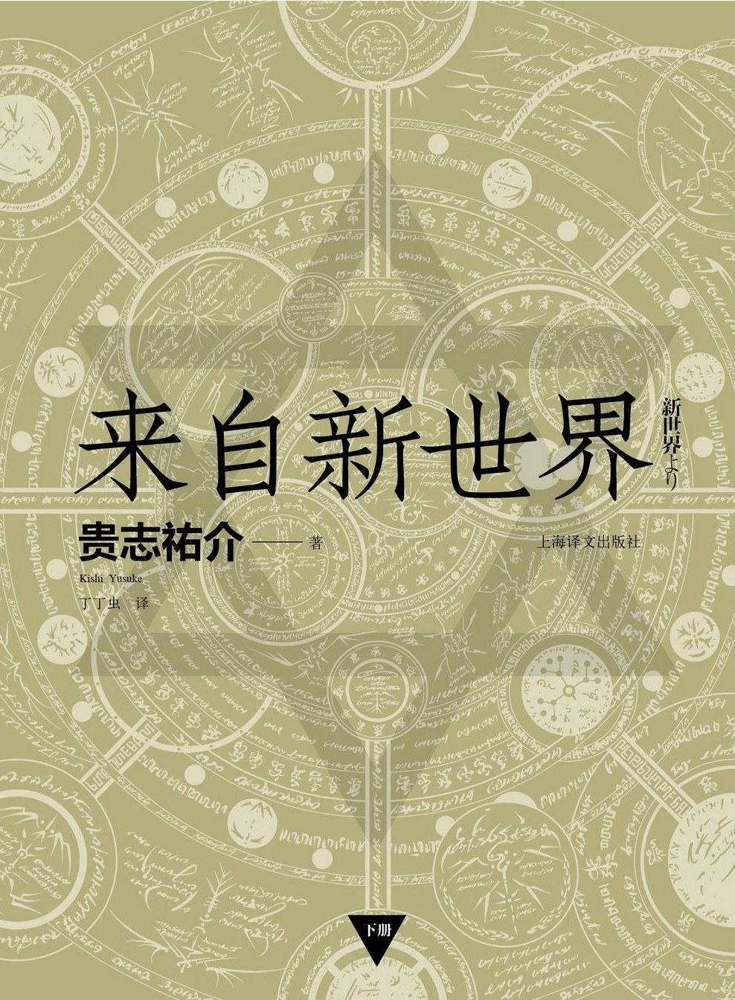
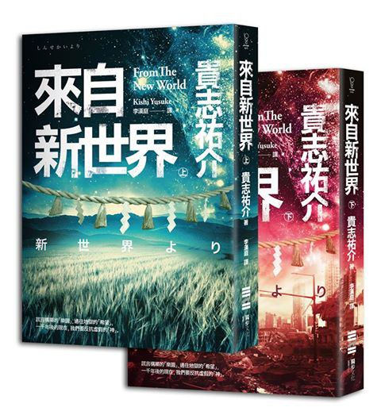

Ⅰ
版本信息Editions
| 日文原版 | 《新世界より 上·下》讲谈社，2008 年 1 月 23 日初版。全书六章，约一千页。 |
|---|---|
| 简体中文版 | 《来自新世界（上下）》上海译文出版社，2014 年 1 月，译者丁丁虫，精装 1076 页。 |
| 繁体中文版 | 台湾独步文化版《來自新世界》，上下两卷，是目前华语圈评价最高的译本之一。 |
| 获奖 | 第 29 回日本 SF 大赏（2008）。此后长期位列日本科幻小说榜单前列，简体版豆瓣评分 9.0。 |
| 前传 | 《新世界元年》，2011 年起连载，补完「黑暗时代」到村庄建立的空白。 |

